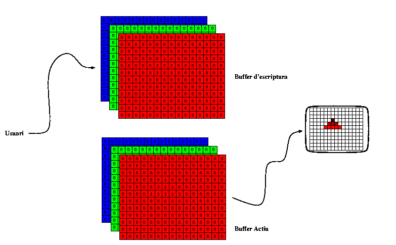

Quan s'hi escriu directament a la memòria de vídeo, cal tenir especials cures per tal que no es produeixin efectes indessitjables a la imatge (com tremolors, o presentació d'imatges incorrectes per estar parcialment actualitzades). Per això quan es fa necessari fer-ho, o quan es modifica l'escena continuament (com en animacions o aplicacions gràfiques 3D que permeten manipulació directa), és desitjable disposar de dos frame buffers, de tal forma que es pot actualitzar el que no està usant-se per a controlar la pantalla, i quan s'ha completat l'actualització es conmuta el paper de cadascun. Aquesta conmutació consumeix molt poc temps i el propi controlador s'encarrega de que ocorri en el moment del retorn vertical del feix, pel que no genera cap altre efecte visible que la modificació que es volia introduir.
|  |
Típicament cada
color disposa d'un byte per a cada pixel en aquests
dispositius, pel que poden representar
(28)3 colors diferents (16.777.216 colors
diferents).